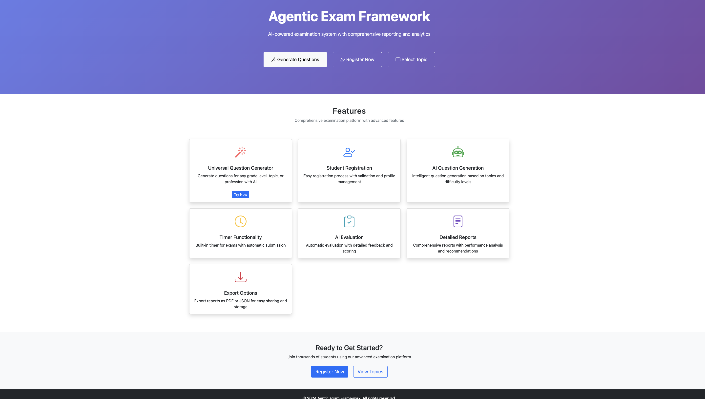
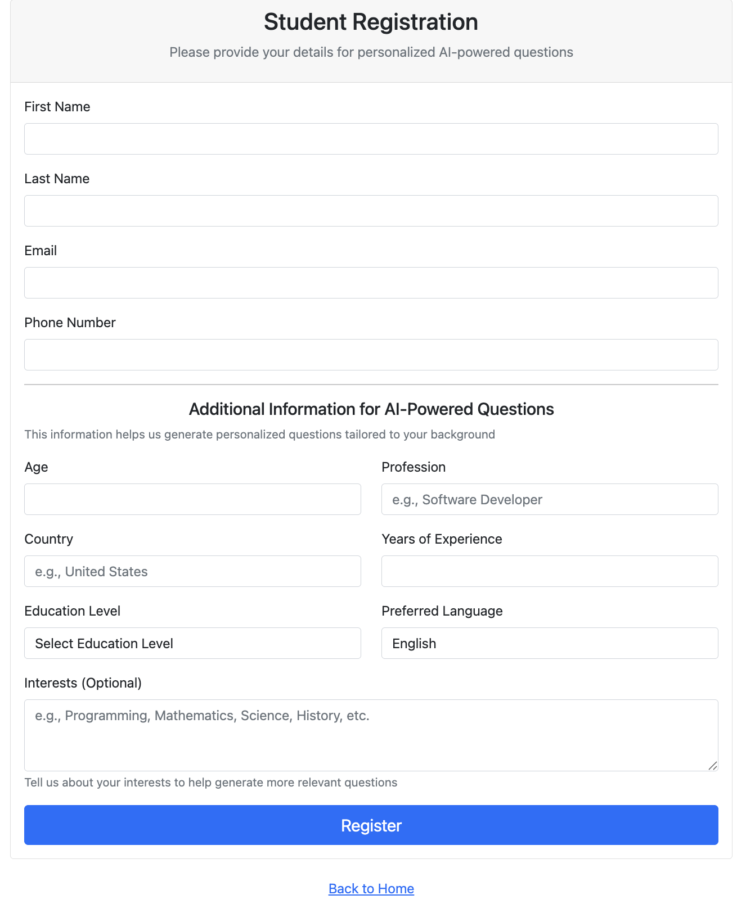
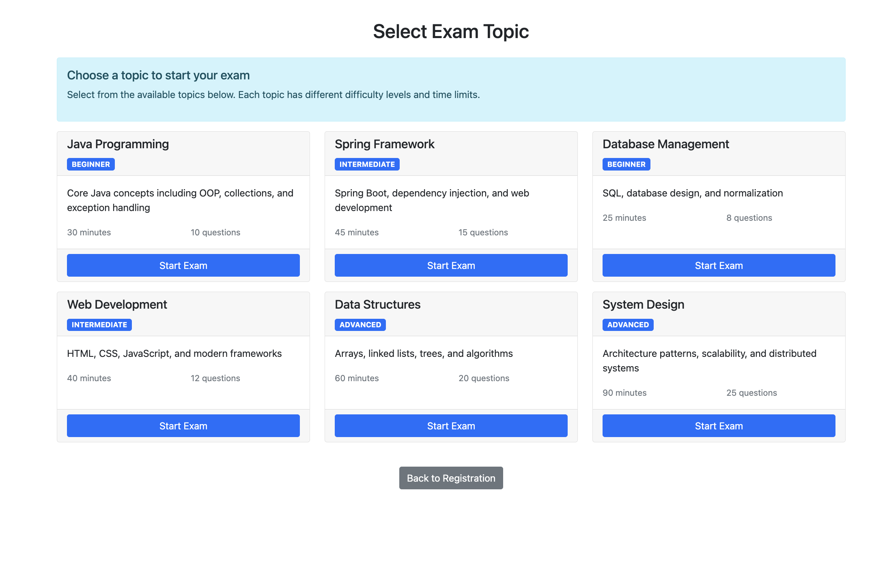
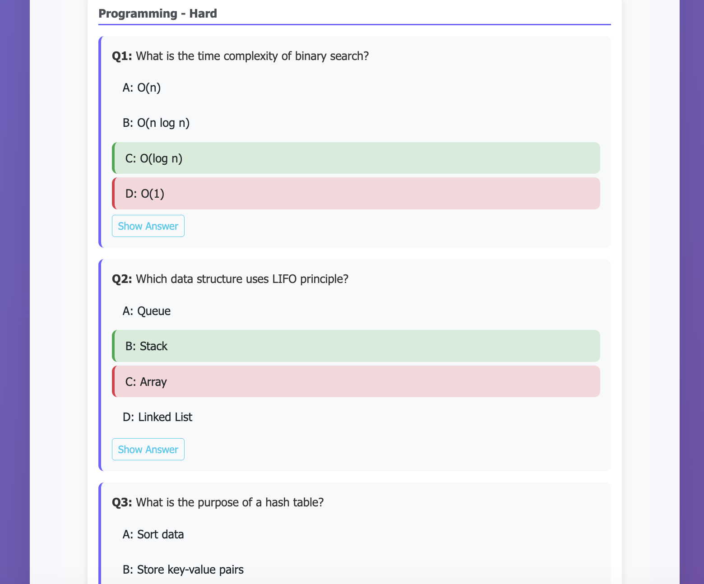

About This Project
This project was built to explore how AI can help students create practice exams in a more structured and reliable way. Students can choose a subject, difficulty level, and topic. The system then generates multiple-choice questions, validates the output, and shows answers in a clear format.
The goal is not just to use AI, but to make AI output more predictable and useful for learning.
How Students Can Use It
1. Register
Students enter basic details such as name, education level, country, and interests.
2. Select Topic
Students choose subjects like Mathematics, Science, Java, Programming, or System Design.
3. Start Exam
The exam starts with a clear topic, difficulty level, question count, and timer flow.
4. Learn From Answers
The system shows correct answers after validation so students can learn from mistakes.
What Makes It Different
Many AI tools directly show whatever the model generates. This project adds a control layer between AI and the student. The system checks the structure, keeps the question format consistent, and makes sure answers are presented clearly.
This makes the learning experience more reliable. Students see questions in the same format, with clear answer choices and simple answer reveal options.
Run Locally
You can run the project locally using Java and Maven.
git clone https://github.com/swapneswarsundarray/ai-assisted-exam.git cd ai-assisted-exam mvn clean package java -jar target/exam-framework-1.0.0.jar
Then open:
http://localhost:8080
Project Screenshots
These screens show how students move through the exam flow: selecting a topic, viewing AI-generated questions, checking answers, and learning from structured feedback.

Home Page
The landing page explains the purpose of the platform and helps users start the exam flow.

Student Registration
Students enter basic details so the system can create a more relevant exam experience.

Topic Selection
Students choose the subject, level, and topic before starting the exam.

AI Generated Questions
The system shows AI-generated questions in a consistent and student-friendly format.
Usage Snapshot
This section can be updated as more students, teachers, or contributors try the project. These numbers help show real usage and community interest.
👩🎓 Students Tried
0+
Update this after students start using the tool.
📝 Exams Generated
0+
Track how many practice exams were created.
⭐ GitHub Feedback
0+
Count ratings, comments, and issue feedback from users.
🤝 Contributors
0+
Update when others submit ideas, issues, or pull requests.
Student Rating & Feedback
If you tried the project, please leave a rating and comment on GitHub. Your feedback will help improve the project and make it more useful for students and teachers.
Example Feedback Format
Contribute
Developers, teachers, and students are welcome to contribute. You can help improve question generation, add more topics, improve UI, add reports, or strengthen AI validation.
View Issues Submit Pull Request